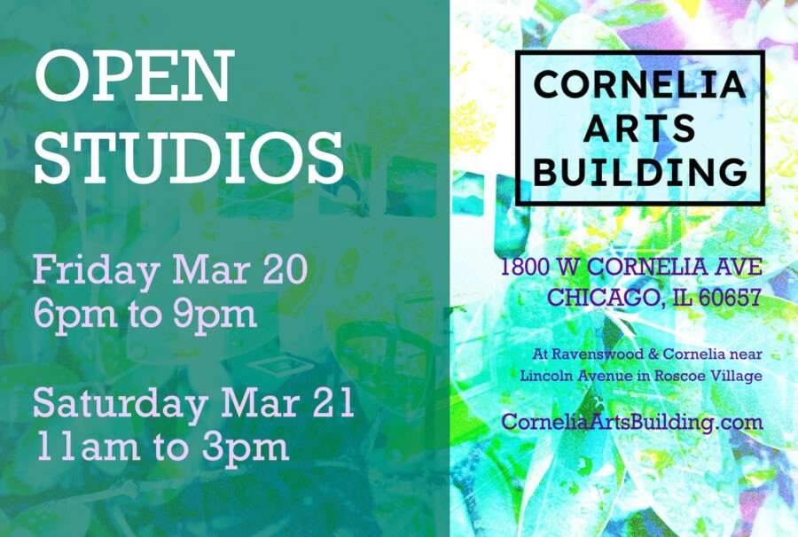

Cornelia Arts Building March 2026 Open Studios – Reception Night
New Artists & Familiar Favorites at the Cornelia Arts Building March Open Studios
Reception Night
Discover new artists and visit familiar favorites at the Cornelia Arts Building March Open Studios. Located at 1800 West Cornelia Avenue, Chicago, Illinois, the all-artist studio building opens its doors to the public on Friday March 20th from 5 – 9 pm, and on Saturday March 21st from 12 noon to 4 pm. Visitors can shop two floors of over two dozen artists open that weekend, and find unique gifts of art and crafts at one of the largest artist studio buildings on Chicago’s North side. Guests of all ages are welcome.
Over 100 artists and artisans work in the building, including painters, sculptors, photographers, ceramic artists, print-makers, jewelers, designers, and much more. Different artists open at each of the four events a year, so repeat visitors always find something new. The front lobby for March is showcasing the returning guest artist Daniel Nelson, exhibiting his joyous and realistic sky-filled paintings of people and animals.
Celebrating their 40 year anniversary, the art center, in a former ice-house, has fostered creativity continually since 1986. Located two blocks south of Addison and one block west of Lincoln Avenue, near where Chicago’s Roscoe Village, Lakeview and North Center borders meet. The “L” Brown Line Addison and Paulina stops are steps away; as are several bus stops along Addison. Parking available in the building lot and on adjacent streets (no permit required). Entrance is located along Ravenswood on the east side of the building. Events are free and open to the public.
Cornelia Arts Building March Open Studios
Friday, March 20, 2026, 5 pm – 9 pm
Saturday, March 21, 2026, 12 noon – 4 pm